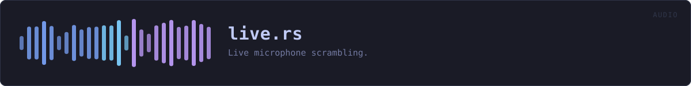

crates/veilvoice-audio/src/live.rs
veilvoice-audio · 237 lines · read the source
Live microphone scrambling.
Structure
Capture and playback run as two independent callbacks driven by the audio hardware, joined by a lock-free SPSC ring buffer. The de-identification runs inside the output callback, which is the shortest path: adding a worker thread would mean a second buffer and a second scheduling delay for no benefit, and veilvoice_core::Deidentifier::process is explicitly allocation-free and safe to call from an audio callback.
Rules the callbacks follow
An audio callback that blocks produces a dropout, so neither callback ever allocates, locks, or waits. Statistics are published through a mutex the callback only ever tries to take: if the UI thread happens to hold it, the update is skipped rather than the audio stalling.
Latency
Total latency is the input buffer, plus the ring backlog, plus the engine's one-frame group delay (~21 ms at the defaults), plus the output buffer. The ring is intentionally short — enough to absorb jitter between two clocks that are not synchronised, not enough to accumulate a delay the user would notice while speaking.
WHAT THIS FILE CONTAINS
237 lines defining 2 functions (2 public), 3 types and 1 constant. Everything below is read out of the source, so it cannot disagree with the code.
The types it owns.
struct LiveStatsline 41 — A snapshot of what the live path is doing, safe to read from the UI.struct LiveSessionline 56 — A running live-scramble session.struct Sharedline 64
What happens when it runs. These are the ways in: public, and nothing else in this file calls them, so they are what an outside caller reaches first.
LiveSession::startline 76 — Start scrambling from input into output.LiveSession::statsline 197 — Read the current statistics, resetting the peak meters.
WHAT CALLS WHAT
The functions this file defines, and the calls between them. An edge means the callee's name appears, called, inside the caller's body — a syntactic reading, not a type-resolved one.
The same graph as Mermaid source
%%{init: {"theme":"base","themeVariables":{"background":"#1a1b26","primaryColor":"#1f2335","primaryTextColor":"#c0caf5","primaryBorderColor":"#7aa2f7","secondaryColor":"#16161e","tertiaryColor":"#16161e","lineColor":"#737aa2","textColor":"#c0caf5","mainBkg":"#1f2335","nodeBorder":"#7aa2f7","clusterBkg":"#16161e","clusterBorder":"#2f3549","fontFamily":"ui-monospace, SFMono-Regular, Consolas, monospace","fontSize":"14px"}}}%%
flowchart TD
n_start(["LiveSession::start<br/>line 76"])
n_stats(["LiveSession::stats<br/>line 197"])
click n_start href "https://github.com/tilas01/veilvoice/blob/main/crates/veilvoice-audio/src/live.rs#L76" "open the source"
click n_stats href "https://github.com/tilas01/veilvoice/blob/main/crates/veilvoice-audio/src/live.rs#L197" "open the source"
classDef entry fill:#1f2335,stroke:#7aa2f7,color:#c0caf5
class n_start,n_stats entryThis site loads no third-party script, so it cannot run Mermaid; the diagram above is the same nodes and edges drawn by the generator instead. GitHub renders the source below directly.
ITEMS
| Item | Line | Documentation |
|---|---|---|
RING_MILLIS const | 37 | How much jitter the ring absorbs before it starts dropping samples. |
LiveStats pub struct | 41 | A snapshot of what the live path is doing, safe to read from the UI. |
LiveSession pub struct | 56 | A running live-scramble session. |
Shared struct | 64 | |
LiveSession::start pub fn | 76 | Start scrambling from input into output. |
LiveSession::stats pub fn | 197 | Read the current statistics, resetting the peak meters. |